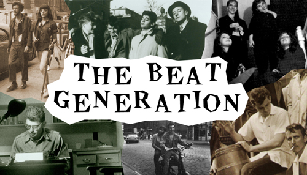
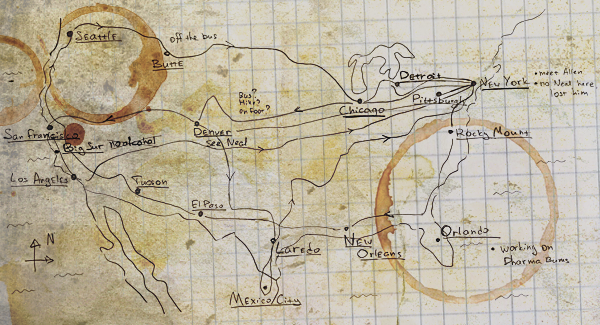

|
|

The Beat Generation was a group of authors whose literature explored and influenced American culture in the post-World War II era. The bulk of their work was published and popularized throughout the 1950s. Central elements of "Beat" culture: rejection of standard narrative values, the spiritual quest, exploration of American and Eastern religions, rejection of materialism, explicit portrayals of the human condition, experimentation with psychedelic drugs, liberation and exploration.
Allen Ginsberg's Howl (1956), William S. Burroughs's Naked Lunch (1959) and Jack Kerouac's On the Road (1957) are among the best known examples of Beat literature. Both Howl and Naked Lunch were the focus of obscenity trials that ultimately helped to liberalize publishing in the United States. The members of the Beat Generation developed a reputation as new bohemian hedonists, who celebrated non-conformity and spontaneous creativity.

The core group of Beat Generation authors - Herbert Huncke, Allen Ginsberg, William S. Burroughs, Lucien Carr, and Jack Kerouac - met in 1944 in and around the Columbia University campus in New York City. Later, in the mid-1950s, the central figures (with the exception of Burroughs and Carr) ended up together in San Francisco where they met and became friends of figures associated with the San Francisco Renaissance.
In the 1960s, elements of the expanding Beat movement were incorporated into the hippie and larger counterculture movements. Neal Cassady, as the driver for Ken Kesey's bus, Further, was the primary bridge between these two generations. Allen Ginsberg's work also became an integral element of early 1960s hippie culture.
|
|